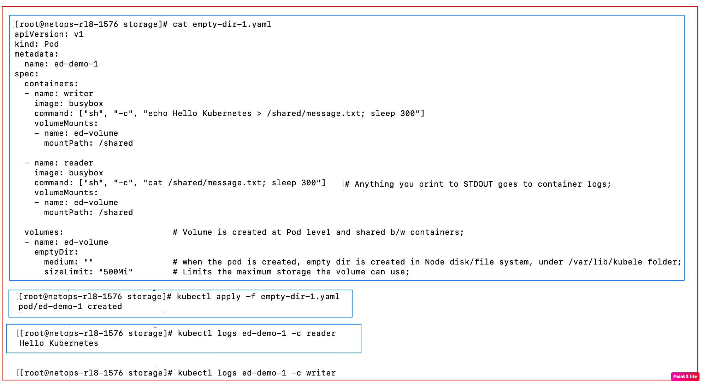

| Behavior | Description |
|---|---|
| Created | When Pod starts |
| Deleted | When Pod is removed |
| Shared | All containers in the Pod |
| Survives container restart | Yes |
| Survives Pod restart | No |

1. Actually, stdout logger is preferred way of shipping application logs;
2. There is a little chance of losing data in both cases, if log shipper is slow;
3. Why is better than emptyDir volume?
In case of emptyDir, logs are deleted when the pod is deleted/rescheduled;
In case of stdout logger, logs will be there somewhere on the node - /var/log/containers/stdout-demo_default_logger-.log
# stdout-demo.yaml
apiVersion: v1
kind: Pod
metadata:
name: stdout-demo
spec:
containers:
- name: logger
image: busybox
command:
- sh
- -c
- |
while true; do
echo "Hello from Kubernetes log $(date)"
sleep 5
done
> kubectl apply -f stdout-demo.yaml
> kubectl logs stdout-demo
Hello from Kubernetes log Thu Mar 12 10:12:01 UTC 2026
Hello from Kubernetes log Thu Mar 12 10:12:06 UTC 2026
Hello from Kubernetes log Thu Mar 12 10:12:11 UTC 2026